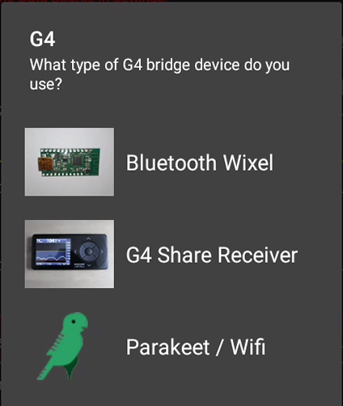
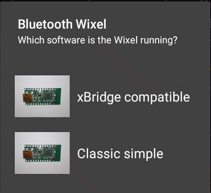
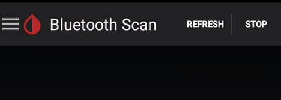

G4 setup
Note: Legacy sensor/transmitter.
The G4 transmitter uses radiofrequencies and not Bluetooth.
You need a bridge device to convert the signal to Bluetooth in order to be able to receive it with your phone.

If you're using a Wixel select the type:

If required (xBridge) enter the transmitter code.
Then pair it to Bluetooth using xDrip+: scan Bluetooth and select it from the list.

If you're using a Bluetooth G4 Share receiver (Platinum) you can also pair it with Bluetooth to xDrip+.
Enter the receiver serial number or use the phone camera to scan the barcode (need to authorize camera access to xDrip+).
If you're using a Wifi Wixel, enter the list of receivers as a coma separated list.
Wifi Wixel / Parakeet
Wifi Wixel + BT Wixel
Wifi Wixel + Bridge Wixel
Once paired, continue to Start sensor.